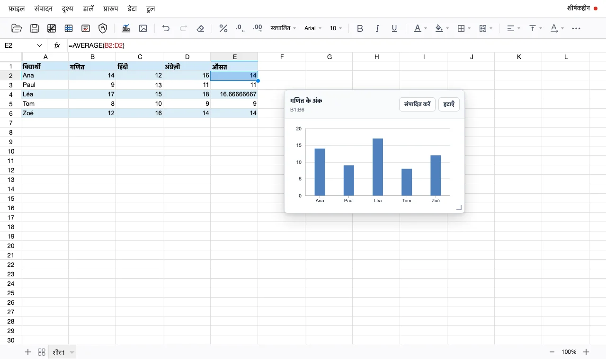

DocCells उपयोगकर्ता पुस्तिका
DocCells एक बहुभाषी स्प्रेडशीट है जो ब्राउज़र में चलती है, बिना इंस्टॉल किए और बिना खाते के। यह Excel वर्कबुक (.xlsx) खोलती और सहेजती है।

छह कदमों में मुख्य बातें
| काम | तरीका |
|---|---|
| दर्ज करना | किसी सेल पर क्लिक करें, टाइप करें, Enter (डेटा दर्ज करना) |
| गणना | = और फिर सूत्र टाइप करें: =AVERAGE(B2:B6) (सूत्र) |
| सूत्र कॉपी करना | चयन का नीला हैंडल खींचें, या Ctrl D (भरना) |
| सजाना | प्रारूप मेनू, या बटन (फ़ॉर्मेटिंग) |
| चार्ट बनाना | डेटा चुनें, (चार्ट) |
| सहेजना | Ctrl S: एक Excel फ़ाइल (खोलना और सहेजना) |
विषय-सूची
- खोलना और सहेजना: फ़ाइलें, हाल की फ़ाइलें, पुनर्प्राप्ति, Google Sheets, भाषा।
- इंटरफ़ेस: मेनू, बटन, सूत्र पट्टी, टैब, ज़ूम।
- डेटा दर्ज करना, चुनना, कॉपी करना, भरना।
- सूत्र, सूचियाँ और सम्मिश्र संख्याएँ, नामित रेंज, शीट।
- संख्या प्रारूप, फ़ॉर्मेटिंग, सशर्त स्वरूपण, पंक्तियाँ और कॉलम।
- क्रम, फ़िल्टर, खोज, चेकबॉक्स, सूचियाँ और कैलेंडर, चार्ट और स्पार्कलाइन, चित्र और लिंक, प्रिंट।
- विद्यार्थियों के लिए वर्कबुक की सुरक्षा, साझा करना और एम्बेड करना, DocGeo के साथ उपयोग।
- संदर्भ: 314 फ़ंक्शन, शॉर्टकट, Excel के साथ संगतता, अक्सर पूछे जाने वाले प्रश्न।
परंपराएँ
- बटन उनके चिह्न से दिखाए गए हैं ( बोल्ड)।
- Mac पर Ctrl का अर्थ ⌘ है।
- सूत्रों में फ़ंक्शन के अंग्रेज़ी नाम, दशमलव बिंदु और तर्कों के बीच अल्पविराम लिखे जाते हैं।
- पुस्तिका में खोज: / या Ctrl K। शब्द किसी भी क्रम में लिखे जा सकते हैं; फ़ंक्शन का नाम उसकी पंक्ति तक ले जाता है।